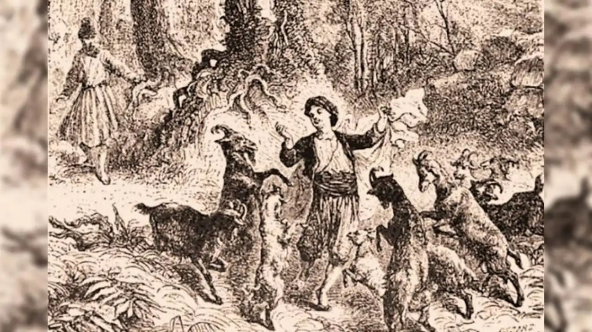

Tokoh Kaldi sering disebut dalam legenda sebagai penemu kopi. Dikisahkan bahwa ia adalah seorang penggembala kambing di wilayah Ethiopia yang hidup sekitar abad ke-9. Suatu hari, Kaldi memperhatikan kambing-kambingnya menjadi sangat aktif setelah memakan buah merah dari suatu tanaman. Penasaran, ia mencoba buah tersebut dan merasakan efek yang menyegarkan. Cerita ini kemudian menyebar ke para biarawan setempat, yang mulai mengolah biji tersebut menjadi minuman untuk membantu mereka tetap terjaga saat beribadah. Meskipun kisah Kaldi lebih bersifat legenda daripada fakta sejarah yang terverifikasi, cerita ini sering dianggap sebagai asal-usul populer dari penemuan kopi.

Website tentang dunia kopi.